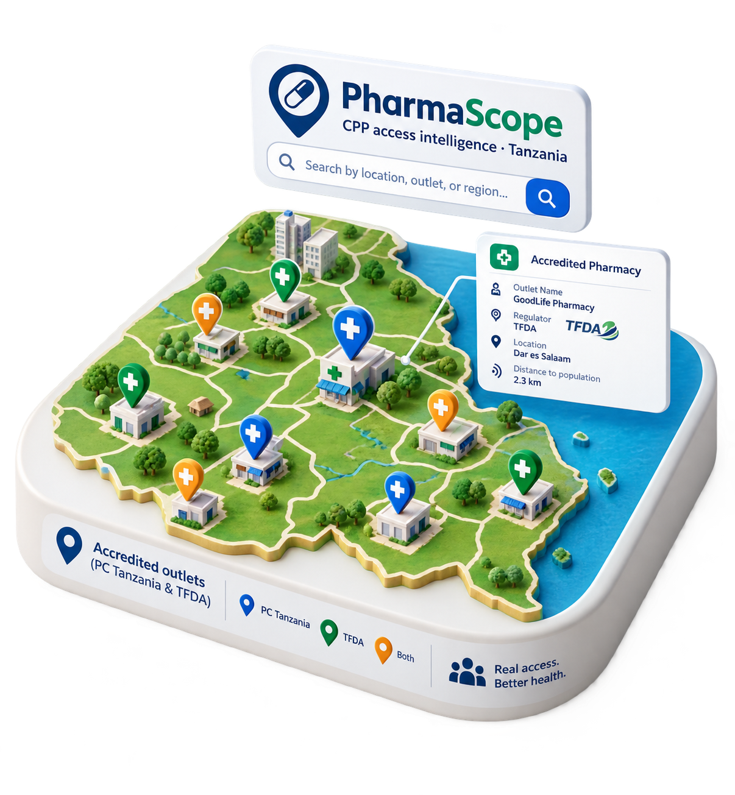

PharmaScope turns Pharmacy Council and Tanzania Medicines and Medical Devices Authority (TMDA) accreditation records into database portal. Users can search and filter the Drug Outlet Registry, find the nearest outlet to any address, and assess proposed sites before accreditation. It also enables users to track the quality and completeness of the underlying data.

PharmaScope provides valid accreditation data from the Pharmacy Council of Tanzania and TMDA, covering approximately 4,900 drug outlets across more than 21 regions. The data are harmonized from official regulatory source records to provide consistent and accessible information.
Explore registryEnter an address, share your location, or drop a pin on the map. PharmaScope instantly shows the nearest accredited drug outlets, ranked by distance, with contact details and one-tap directions.
Find nearest drug outlet